CASE STUDY 03 / Security configuration
SALT Security Control
Bringing complicated user permissions into one understandable view
See how security records connect
Explore identity search, relationship views, and change preparation.


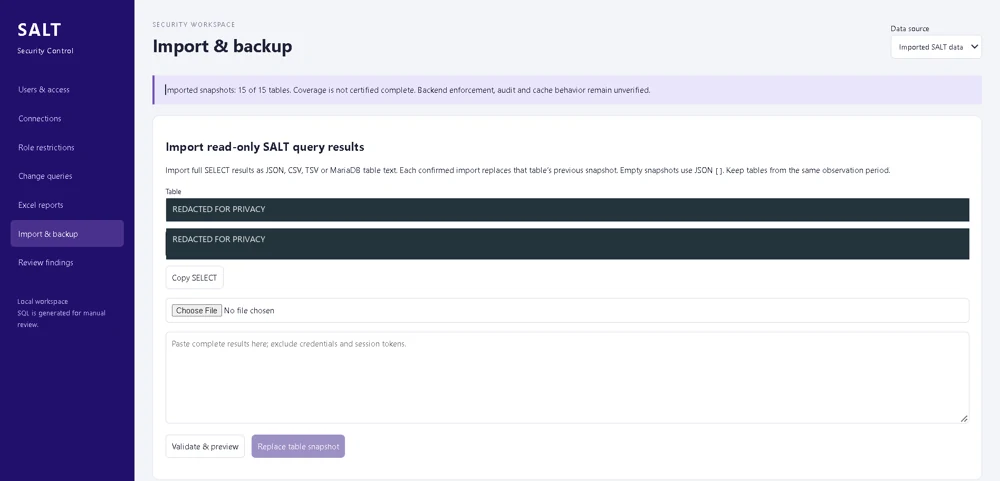
Browse the remaining 13 screenshots on this page

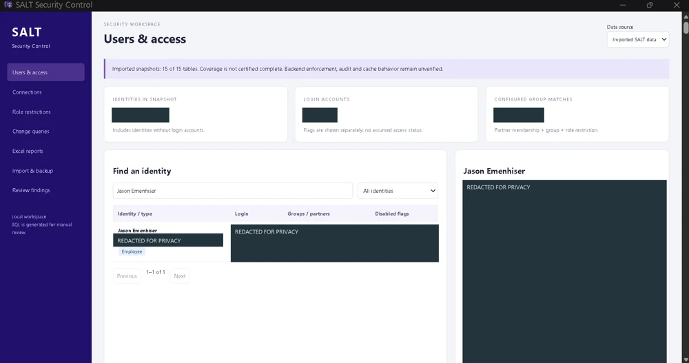

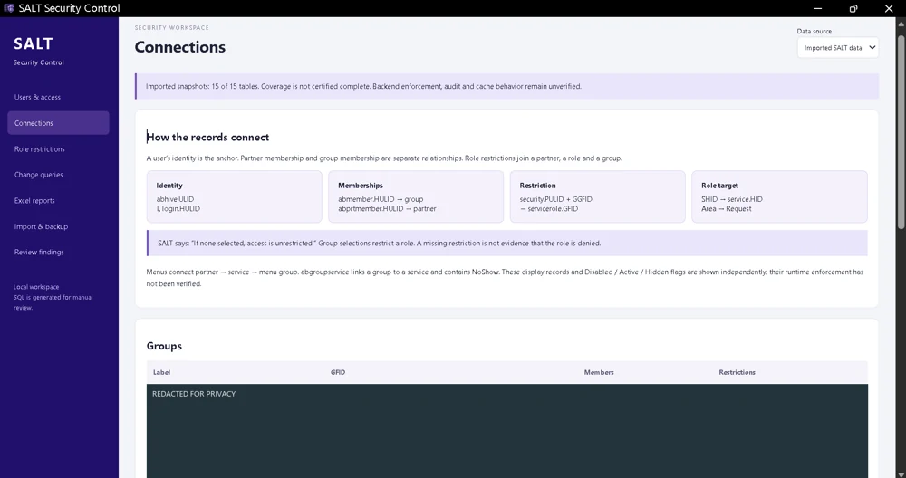

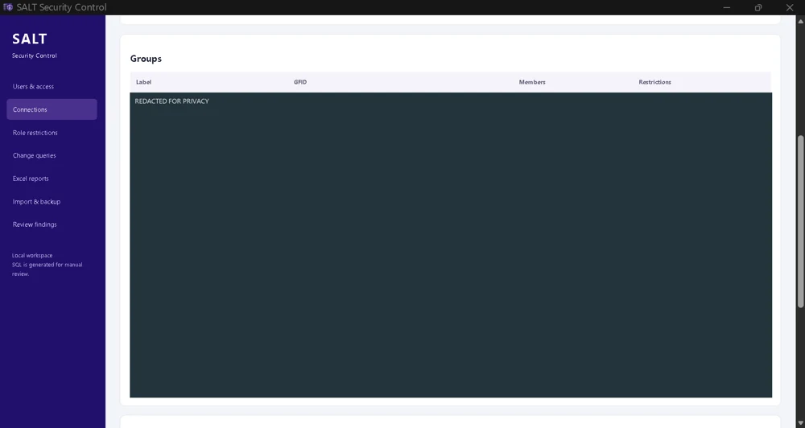

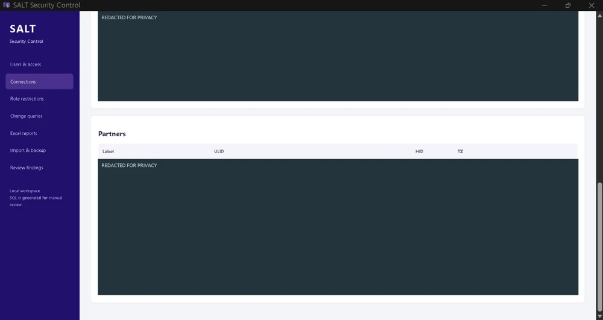

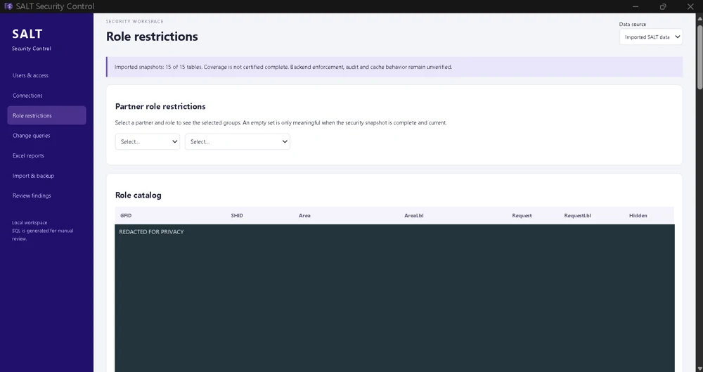

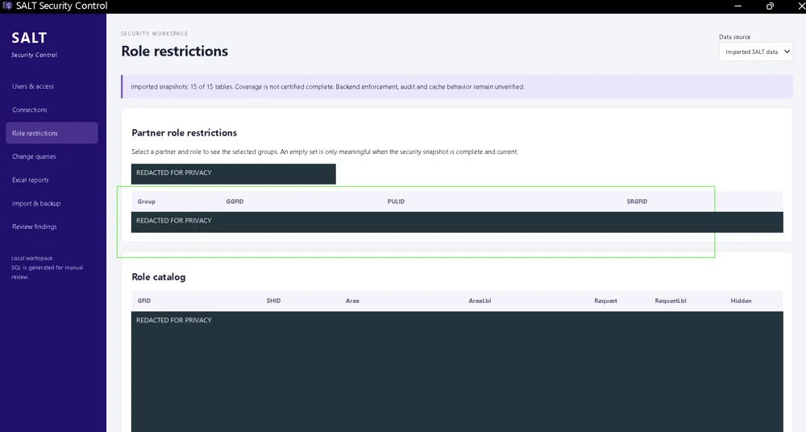

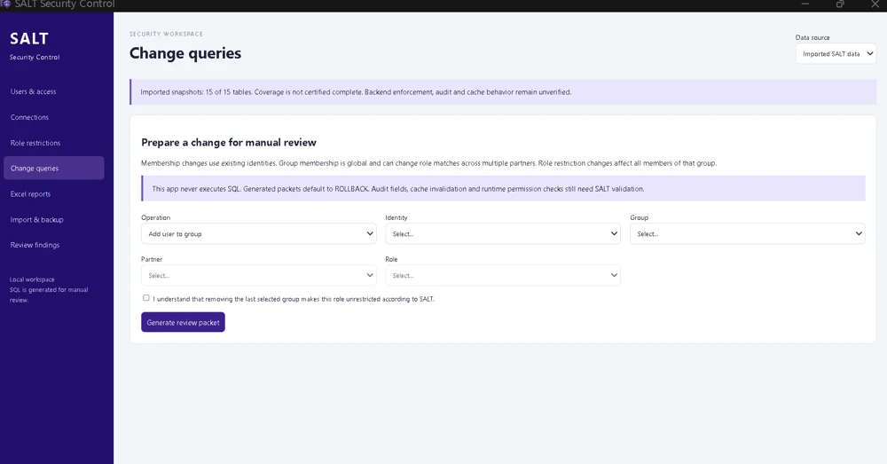

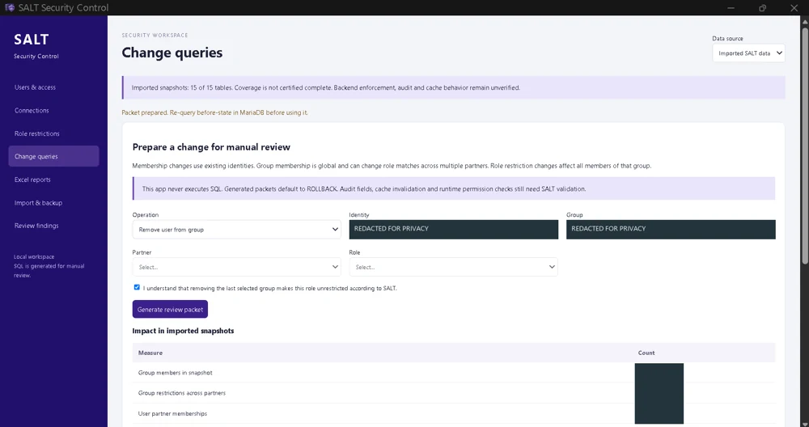

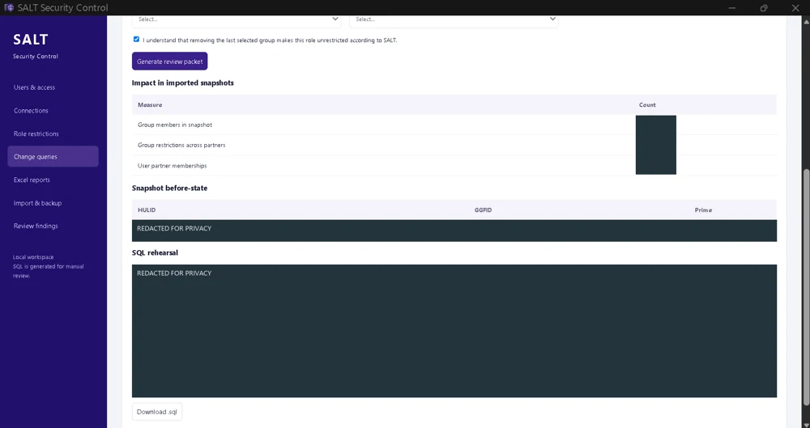

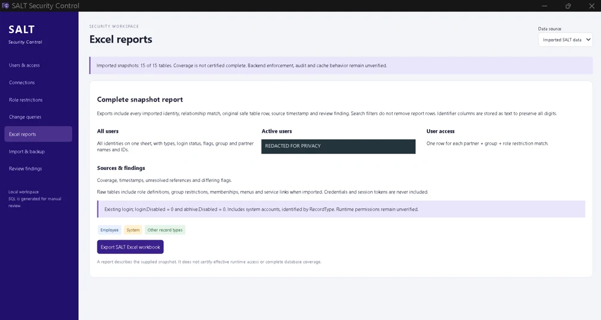

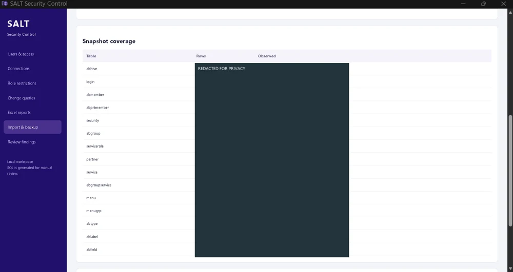

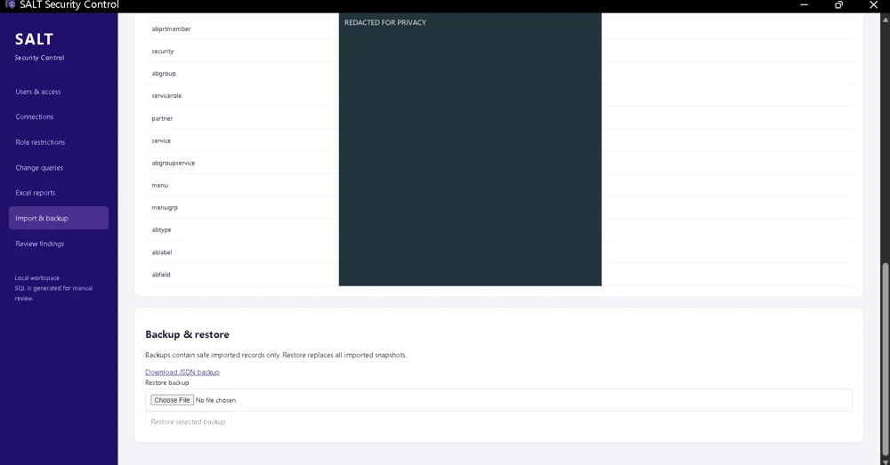

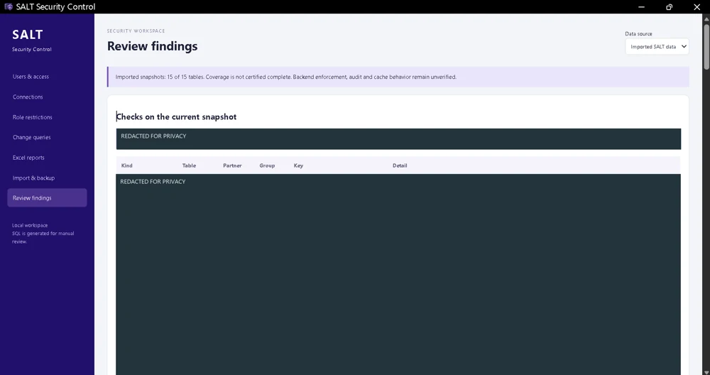
Select an image to enlarge it, then use the arrows to explore the application.
Understanding access across connected records
Warehouse system security can be difficult to investigate because a person's access is not always represented by a single account record.
User identities, login accounts, group memberships, partner assignments, and role restrictions may be stored separately.
I wanted a faster way to search for someone and understand the broader picture of their configured security relationships without manually tracing every connection across database tables.
A security investigation and change-preparation workspace
I developed SALT Security Control to organize imported security data into a searchable interface.
Instead of investigating isolated records, I can start with an identity and follow the relationships connecting that person to login information, groups, partners, and configured role restrictions.
The application also helps prepare structured SQL changes for manual review.
My longer-term vision includes allowing an administrator to describe a requested security change in natural language and receive a validated, reviewable SQL package. That natural-language change interface is a planned enhancement, not a completed feature.
Key capabilities
- Users & Access: Search identity records and inspect associated login and membership information.
- Connections: Understand how security tables and relationship records fit together.
- Role Restrictions: Examine the relationship between partners, groups, and configured role restrictions.
- Change Queries: Prepare structured SQL review packets for supported security membership and restriction changes.
- Excel Reports: Export security information for analysis and documentation.
- Import & Backup: Work with imported database snapshots and maintain recoverable data copies.
- Review Findings: Surface incomplete or inconsistent references for further investigation.
Thousands of records, a clearer picture
The imported snapshot shown includes more than 18,000 identity records and thousands of configured relationship matches.
I brought those records into a workspace where they can be searched, connected, interpreted, and reported on together, reducing the need to trace each relationship manually.
Snapshot analysis, not live access changes
SALT Security Control analyzes imported snapshots and prepares changes for manual review. It does not directly modify live permissions, and its configured relationships are not a certification of effective runtime access.
Making relational security data understandable
I defined how identity, login, membership, and restriction records should be connected in a usable investigation workspace. I directed AI-assisted implementation around searching, tracing relationships, preparing reports, and reviewing proposed changes.
The design reflects the way I investigate access questions: start with a person, understand the connected records, and separate findings from proposed changes.